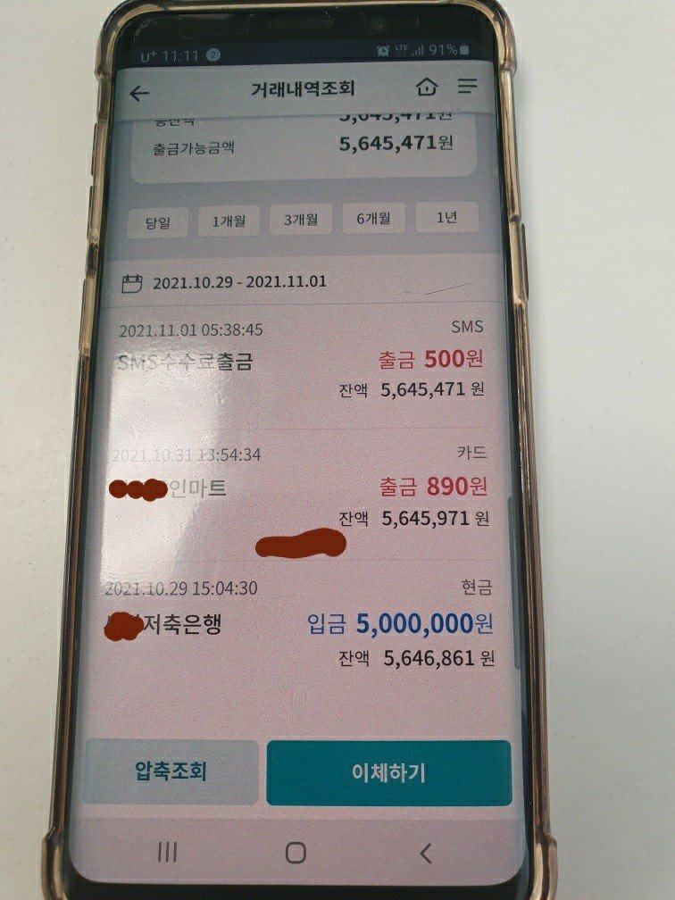
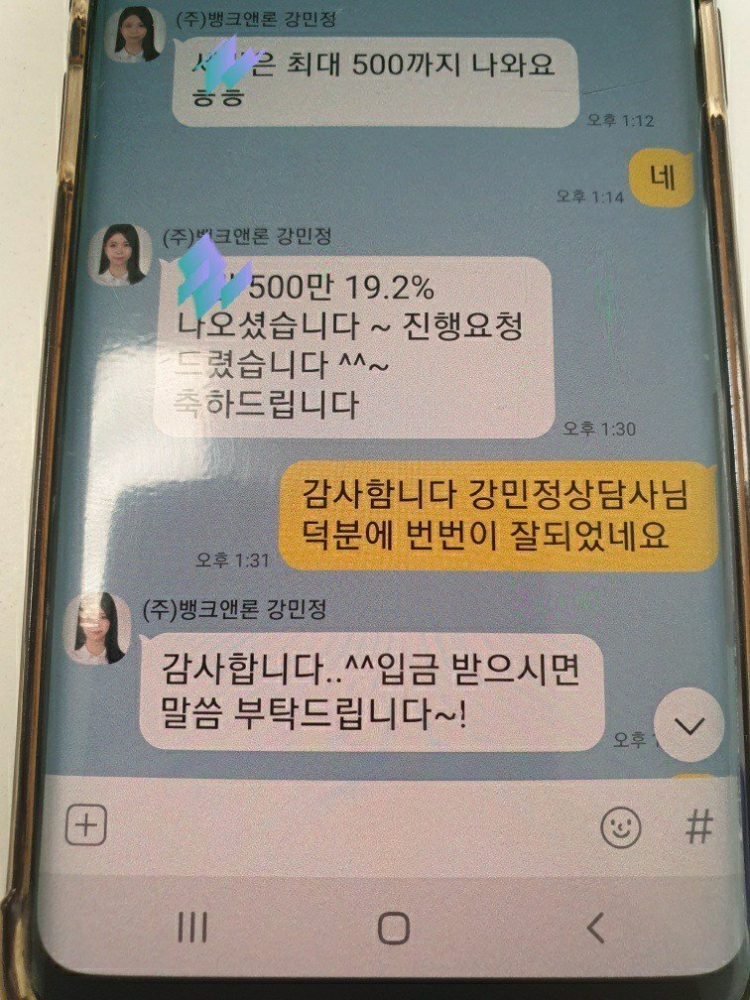

강민정상담사님 2번째상담후기
1.직장인 : 정직원 으로 근무중 사대보험 안됨니다
2. 재직기간 소득:이직을 하여 약2달근무 월급 250만원 입니다
3. 채무현황: 개인회생 3600만원 기대출 300 있습니다
3. 개인회생 36회 11회차 미납없슴 대출도 미납없슴
기 대출이 있어서 300백정도 대출을 받으려고 상담을 진행 강민정삼담사님께서 3군데
진행을 하였은나 한군데 100백 다른곳 200백 지금 나오는 저축은행이조건이 제일 좋음 생각도 못했는데
500백이 나옴 36개월 균등상환 한달에 183.000원 그래서 바로 진행을 하였습니다
성심성의것 잘봐주시고 성공률이 아주 높습니다 좋은결과가 나와서 다시 한번 감사 함니다

